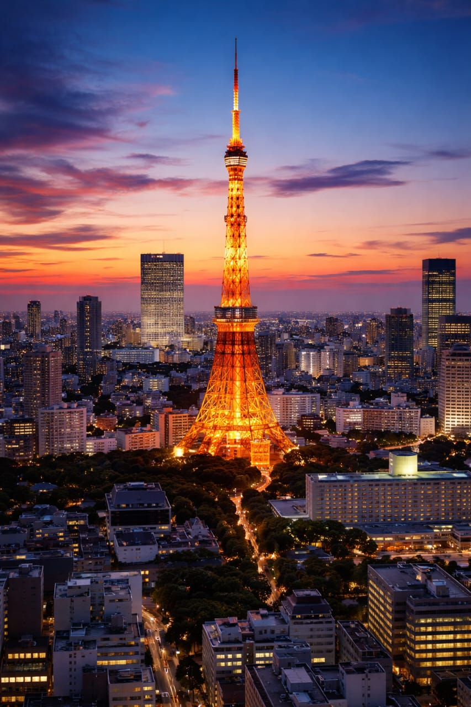
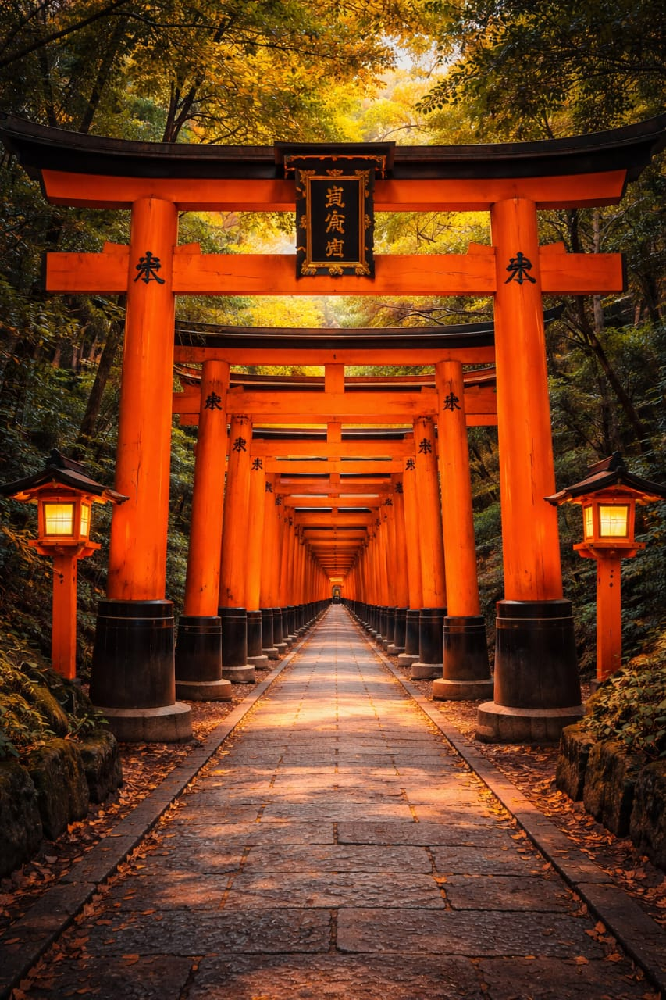
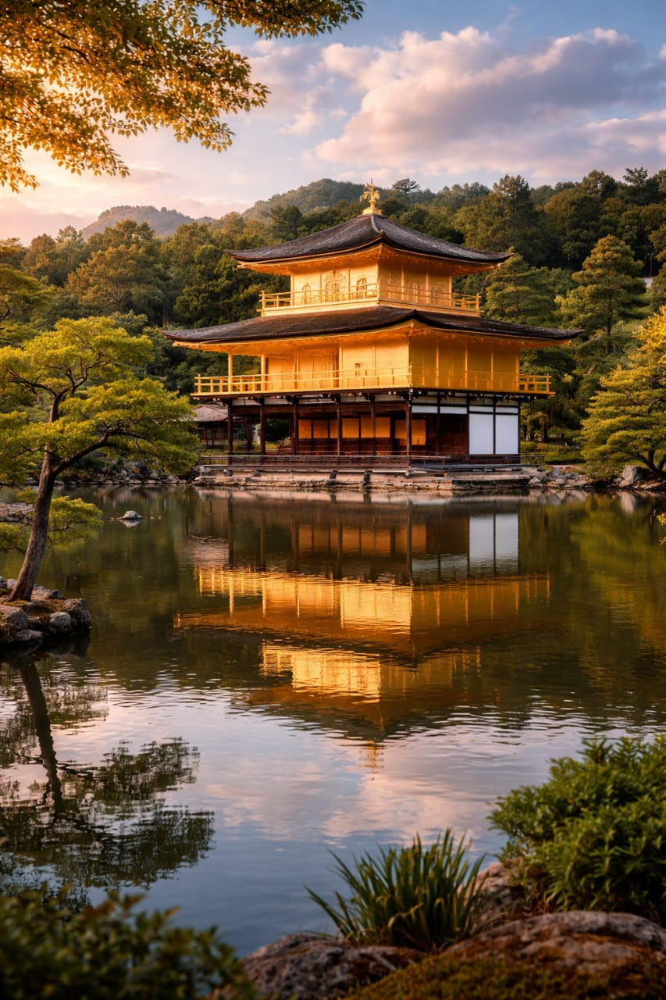
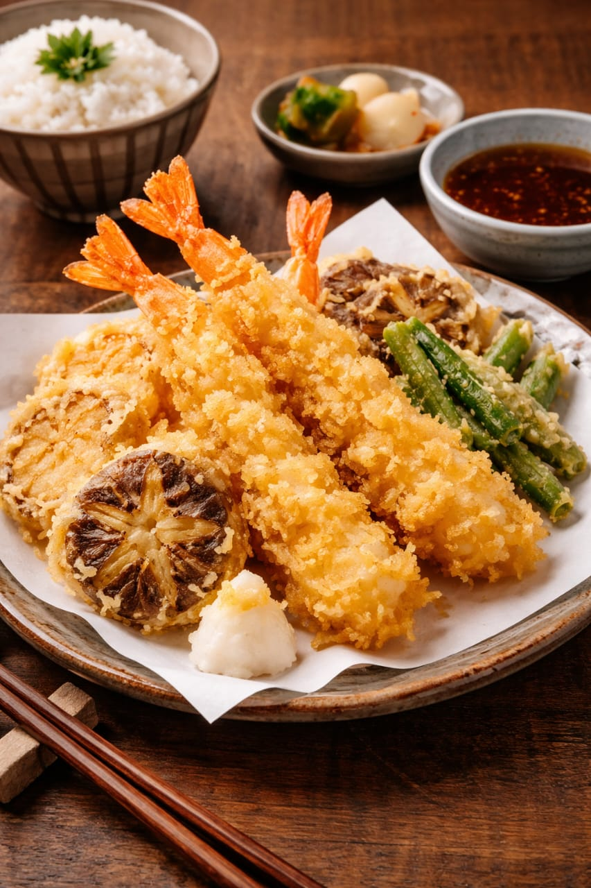

Bem-vindo à Tourism Experience!
Na Tourism Experience, acreditamos que viajar é mais do que apenas visitar lugares; é sobre criar memórias duradouras e vivenciar culturas únicas. Nossa missão é proporcionar experiências de viagem excepcionais que conectem você aos destinos de uma maneira autêntica e envolvente.
Sua próxima aventura começa aqui!
Atrações Imperdíveis no Japão

Tokyo Tower - Um ícone da cidade de Tóquio, oferecendo vistas panorâmicas incríveis.

Fushimi Inari - Conhecido por seus milhares de portões torii vermelhos que formam trilhas mágicas.

Kinkaku-ji - O Pavilhão Dourado em Quioto, um templo deslumbrante cercado por belos jardins.
Culinária Japonesa
Descubra a rica e variada culinária japonesa, com pratos tradicionais como sushi, ramen e tempura, preparados com ingredientes frescos e técnicas artesanais.

Sushi
Peixe fresco sobre arroz temperado, uma obra-prima da culinária japonesa.

Ramen
Sopa de macarrão com caldo rico e ingredientes variados que aquecem a alma.

Tempura
Legumes e frutos do mar fritos em massa leve e crocante, simplesmente irresistível.